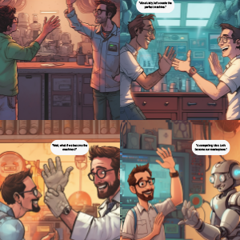

Pencil
Photoshop
Two scientists start discussing the creation of robots. They work on blueprints and calculations, excitedly talking about their dreams and how robots could change the world. The scientists start building their first robot. They study circuits and code, working hard every day.They start implanting robot parts into their own bodies. At this stage, they still retain most of their humanity but are excited about the changes.Over time, the scientists replace more and more of their bodies with robotic parts. They start to look and act more like robots, losing some of their human characteristics.
Project caption
